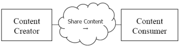

IHE IT Infrastructure (ITI)
Technical Framework
Revision 16.0 – Final Text
Ink-on-paper signatures have been a part of the documentation process in health care and have traditionally been indicators of accountability. Reliable exchange and storage of electronic data between disparate systems requires a standard that implements equivalent non-repudiation to prevent document creators from denying authorship and rejecting responsibility.
This section defines the actors, transactions, and/or content modules in this profile. General definitions of actors are given in the Technical Frameworks General Introduction Appendix A at . http://ihe.net/Technical_Frameworks
Figure 37.1-1 shows the actors directly involved in the DSG Profile and the direction that the content is exchanged.
This profile defines only the capability for Document Digital Signature. This profile does not include transport, workflow, or other content profiles. The grouping of the content module described in this profile to specific actors is described in more detail in the “Required Actor Groupings” section below.
Figure 37.1-1: DSG Actor Diagram
Table 37.1-1 lists the content module(s) defined in the DSG Profile. To claim support with this profile, an actor shall support all required content modules (labeled “R”) and may support optional content modules (labeled “O”).
Table 37.1-1: DSG Profile - Actors and Content Modules
| Actors | Content Modules | Optionality | Reference |
| Content Creator | Document Digital Signature | R | ITI TF-3: 5.1 |
| Content Consumer | Document Digital Signature | R | ITI TF-3: 5.1 |
Most requirements are documented in Content Modules (Volume 3). This section documents any additional requirements on profile’s actors.
A Content Creator that conforms to this profile shall have the capability to create a digital signature document conforming to the Document Digital Signature content module using the signature option(s) chosen.
A Content Consumer that conforms to this profile shall have the capability to verify signatures using the signature option(s) chosen.
Table 37.2-1 lists the option(s) defined in the DSG Profile.
Table 37.2-1: DSG Profile - Options
| Actors | Option | Vol. & Section |
| Content Creator (Note 1) | Detached Signature | ITI TF-1: 37.2.1 |
| SubmissionSet Signature | ITI TF-1: 37.2.1.1 | |
| Enveloping Signature | ITI TF-1: 37.2.2 | |
| Content Consumer (Note 1) | Detached Signature | ITI TF-1: 37.2.1 |
| SubmissionSet Signature | ITI TF-1: 37.2.1.1 | |
| Enveloping Signature | ITI TF-1: 37.2.2 |
Note 1: Content Creator Actors and Content Consumer Actors shall support at least one option.
Content Creators that support the Detached Signature Option shall have the capability to create a Detached Signature document that is composed of the Signature block as specified in ITI TF-3: 5.5.2 and 5.5.3, and a manifest of references to the signed documents. The signature document does not include the content of the documents that are signed. The Detached Signature Option supports the signing of multiple documents with one signature document.
The digital signature document, when published using Document Sharing profiles (e.g., XDS, XDR, XDM, XCA, etc.), shall conform to the Document Sharing metadata rules identified in ITI TF-3: 5.5.6.
Content Consumers that support the Detached Signature Option shall have the capability to perform signature verification specified in ITI TF-3: 5.5.5 for documents signed with a Detached Signature.
The SubmissionSet Signature Option is a variant on the Detached Signature Option.
The Content Creator shall have the ability to create a Detached Signature document that includes reference to all the documents included in the SubmissionSet, except for the Detached Signature document itself; and a reference to the SubmissionSet unique ID. This Detached Signature document is included in the SubmissionSet.
The SubmissionSet Signature Option requires the use of a Document Sharing Profile.
Content Consumers that support the SubmissionSet Signature Option shall have the capability to perform signature verification specified in ITI TF-3: 5.5.5 for all the documents contained within the Detached Signature.
Content Creators that support the Enveloping Signature Option shall have the capability to create an Enveloping Signature document that is composed of the signature block as specified in ITI TF-3: 5.5.2 and 5.5.4, and the document that is signed. The Enveloping Signature Option only supports one document per signature document.
No guidance is given for use of Document Sharing with Enveloping Signatures. This is due to the fact that one document contains both signature and content; so it is unclear what the metadata should represent. XDS Affinity Domain or other Policy Domain may provide the guidance.
Content Consumers that support the Enveloping Signature Option shall have the capability to perform signature verification specified in ITI TF-3: 5.5.5 for documents signed with an Enveloping Signature.
There are two actors in this profile, the Content Creator and the Content Consumer. Content is created by a Content Creator and is to be consumed by a Content Consumer. The sharing or transmission of content from one actor to the other is not specifically addressed by this profile. This communication may be achieved by the Document Sharing profiles, or by other means.
When Digital Signature documents are stored using a Document Sharing profile, such as XDS, the metadata rules are defined in ITI TF-3: 5.5.6.
Content Creator and Content Consumer shall be grouped with CT Time Client as Digital Signatures require a reliable date and time.
Content Creator and Content Consumer should be grouped with ATNA Secure Node or Secure Application to record an Audit Message when a signature is created or validated.
Table 37.3-1: DSG - Required Actor Groupings
| DSG Actor | Actor to be grouped with | Reference | Content Bindings Reference | |||
| Content Creator | CT Time Client | ITI TF-1: 7.1 | -- | |||
| Content Creator with the SubmissionSet Signature Option | XDS.b Document Source | ITI TF-1: 10.1 (Note 1) | -- | |||
| XDR Document Source | ITI TF-1: 15.1 (Note 1) | -- | ||||
| XDM Portable Media Creator | ITI TF-1: 16.1 (Note 1) | -- | ||||
| Content Consumer | CT Time Client | ITI TF-1: 7.1 | -- | |||
| Content Consumer with the SubmissionSet Signature Option | XDS.b Document Consumer | ITI TF-1: 10.1 (Note 1) | -- | |||
| XDR Document Recipient | ITI TF-1: 15.1 (Note 1) | -- | ||||
| XDM Portable Media Importer | ITI TF-1: 16.1 (Note 1) | -- | ||||
Note 1: One or more of the Document Sharing infrastructure groupings shall be supported.
The purpose of digital signatures in healthcare can vary greatly and it is important to understand the distinct use cases. A Digital Signature is a standards-based method to assure content integrity, authenticity, and authentication of the identity of the signer. The identity of the signer is assured through use of Private Key and Public Key management. Management of Private Key and Public Keys are not addressed by this profile.
One purpose of use of a Digital Signature is to verify that the document being used is the same as the document that was signed and has not been modified by error or intent. This is called establishing document integrity. Document signatures may be used to establish document integrity; that is, to verify that the current document is the same as the signed document, and it has not been modified by error or intent. Document signatures may also be used to ascertain the identity of the signer and the reason for signing.
For example, to confirm that a document is a true copy of a source medical document, the digital signature is checked. If the signature is verified, then the document is a true copy. If the signature does not verify, then the document has been modified.
Another purpose of use is to verify the clinical content of a document. When a physician has verified that a report is complete and correct, the physician signs the document with purpose of signature being “verification”. If there is ever a need, the digital signature provides a mechanism to show that the “verification” was attested to by the physician.
For example, a clinician who needs to rely on a document which was created by another clinician may use a signature to ascertain that the version they are using has been verified.
The Detached Signature Option supports a single signature document that simultaneously signs multiple documents. For example, when a doctor verifies and signs a diagnostic report, the digital signature can also sign the source data that was used to prepare the diagnostic report. The digital signature for a mammography diagnostic report may sign:
This signature indicates more than that the diagnostic report is complete and correct. It also indicates the data that was examined and can detect whether that data is subsequently modified or damaged. Further, it indicates the extent of the data used. If there are also other reports in the XDS Document Registry, e.g., a later lab report, the digital signature indicates that this other information not used to prepare the report.
A variant of a Signature signing multiple documents is one where the group of documents being signed is also defined by a Document Sharing SubmissionSet.
Among other uses, the Detached Signature Option supports use of Document Sharing infrastructure (e.g., XDS, XDR, XDM, and XCA). The following sections describe how common queries can be performed in a Document Sharing environment where document digital signatures are used.
The signatures that apply to a specific document can be found by querying (e.g., the XDS Document Registry) to obtain the “SIGNS” association linkages to that specific document. The “SIGNS” associations link the Digital Signature documents with the documents signed.
The signature document itself contains a manifest that lists the document IDs for all of the signed documents. It might also contain a SubmissionSet uniqueId for a submission set. The documents can be obtained through the Document Sharing system. It is possible that authorization or other limits may prevent retrieval of some of these documents.
The signature documents are identified as a digital signature. This can be used to query for digital signatures in a time range, for specific patient, etc. The signature purpose codes can be used to limit these signatures. For example, a query may choose to eliminate data integrity signatures and search only for clinician signatures.
The digital signature type document can also be suppressed in queries that are intended to retrieve only source documents. In an environment with extensive use of data integrity, creation, verification, and other signatures there may be several signature documents for each source document. If signature documents are not suppressed then a query for clinical documents may also have distracting extra results returned for signatures.
When a clinician needs to bind both a document and the signature into one document (for example, because there is no Document Sharing infrastructure to carry the document, the digital signature, and the association), then the Enveloping Signature Option needs to be used.
The Enveloping Signature method encapsulates the signed document inside of the digital signature document. The result is one new document that is externally the signature document, and embedded inside that document is the document that is signed.
Since it is unclear whether (or which) metadata should refer to the signed document or to the enveloping signature document, IHE does not specify metadata to be used for an Enveloping Signature document in a Document Sharing infrastructure.
Digital Signatures rely on a Private Key / Public Key Management Infrastructure (aka PKI) that must exist and be configured. The definition and configuration of PKI is outside the scope of this document content profile. The PKI should adhere to ISO TS-17090 standards for PKI in healthcare.
The Detached Signature Option allows for independent management of signature document and content documents; thus, there is a risk they will be made unavailable through revision or access control.
Content Creator and Content Consumer shall be grouped with CT Time Client as Digital Signatures require a reliable date and time. There is a risk that the clock can be subverted, so operational controls should be used to audit clock modifications.
Content Creator and Content Consumer should be grouped with ATNA Secure Node or Secure Application to record an Audit Message when a signature is created or validated.
When used with a Document Sharing infrastructure (e.g., XDS, XDR, XDM, or XCA):
When no Document Sharing infrastructure is used, then the Enveloping Signature Option should be used.